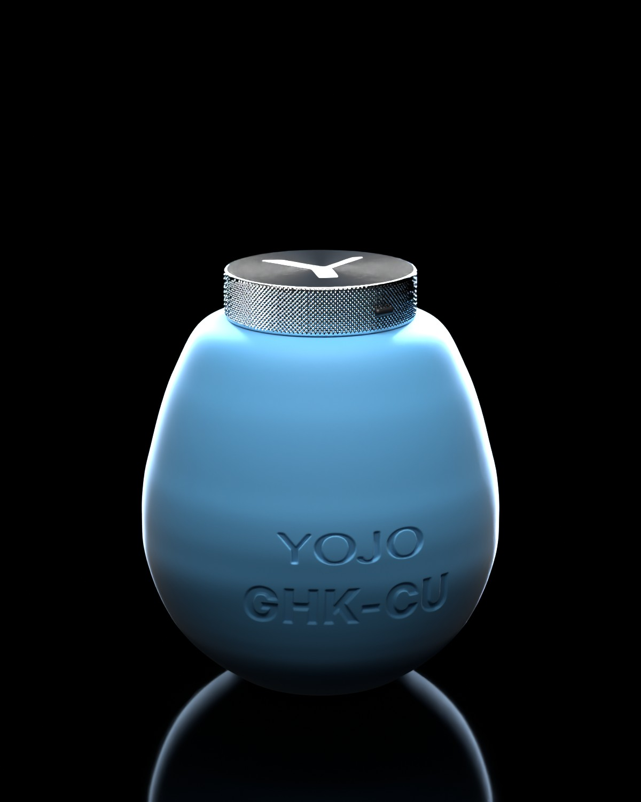
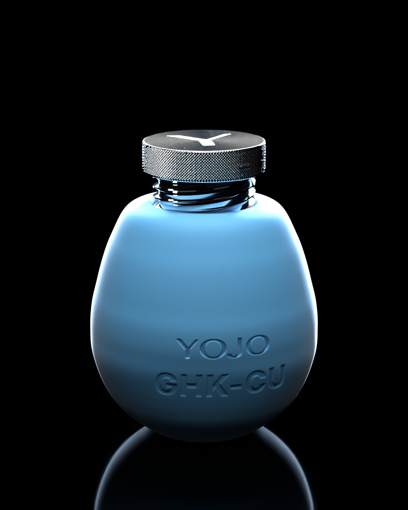
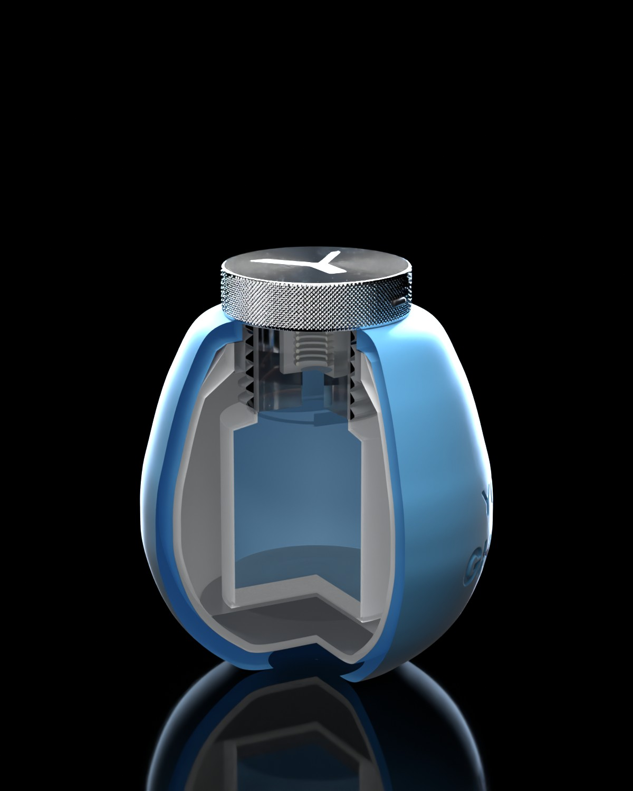
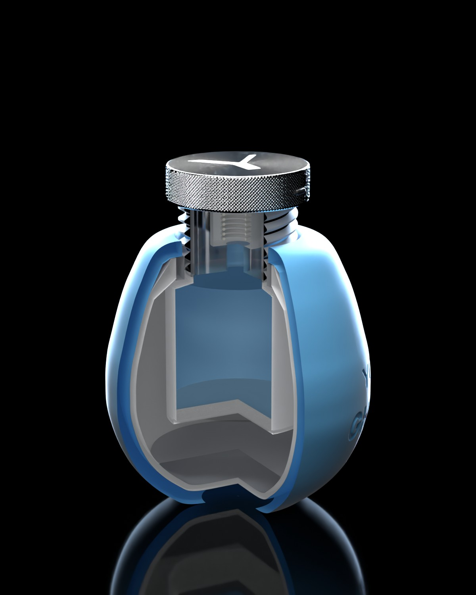
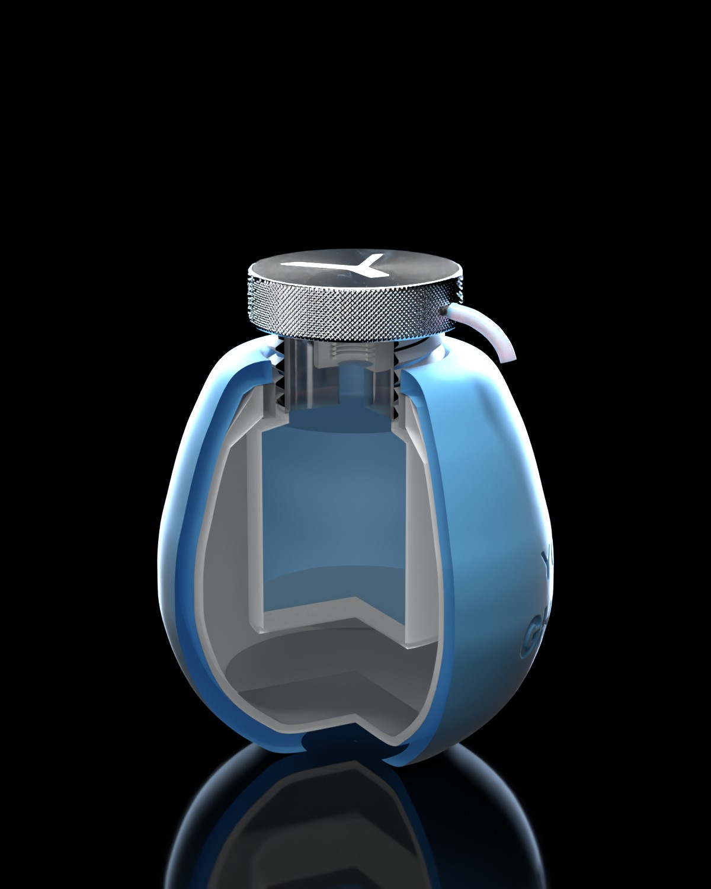

A weighted silicone egg with a knurled head that twists up to open and twists down to lock flush. Inside, a threaded cartridge carries an airless pump and a 30 ml refill cup. Every image here is rendered from one 3D model, built to the numbers below.





Locking is twisting down, nothing else. No push-and-turn, no lugs. One turn clockwise until the head seats flush with a click. One turn counter-clockwise to open, with a light detent at the open height.
Everything that touches cream is plastic. The refill cup, piston, pump, its spring and the outlet channel in the head are PP, PE or POM. Copper peptide reacts with bare aluminium and steel, so the pump spring must be metal-free. The silver parts are metallized plastic and sit outside the fluid path. This is a hard rule for the factory.
Twist the head one turn counter-clockwise. It rises 9 mm on the threads.
Press the head. About 0.2 ml leaves the side slot. A 30 ml cup gives roughly 150 presses.
Twist one turn clockwise until it clicks flush. It can't be pressed. Safe for a bag.
From open, keep turning past the detent until the cartridge unthreads. Lift it out, pull the empty cup off the pump, push on a new one, drop it back and twist down. Press 3 to 5 times to prime.
| Part | Material | How it's made | Source | Touches cream |
|---|---|---|---|---|
| Head | ABS, satin silver PVD, UV hardcoat | Ø36 × 9. Diamond knurl (140 around) and the side slot molded in. Y from the wordmark engraved 0.15 mm on top with a frosted floor. A 5.5 mm deep bore underneath slides on the sleeve. | Custom | No |
| Actuator insert | PP | Sits inside the head. Carries the outlet channel from the pump stem to the slot, and the splines that key the head to the sleeve. | Custom | Yes |
| Threaded sleeve | ABS, silver PVD on the visible band only | 3-start thread, 9 mm lead, 3 mm pitch, OD 30. Holds the pump. Rises 9 mm when opened. | Custom | No |
| Fixed collar | POM or PBT | Internal 3-start thread for the sleeve. Its top face is the rigid stop the head locks against. Click detents at locked and open. Snaps into the shell neck. | Custom | No |
| Airless pump | PP/PE, plastic spring | 0.2 ml dose, 4 mm stroke. Fully metal-free fluid path. | Stock, modified | Yes |
| Refill cup | PP cup, PE follower piston, foil seal | Ø37 × 37, 31 ml fill for 30 ml nominal. Pushes onto the pump. This is the repeat purchase. | Stock or custom size | Yes |
| Inner shell | PP, about 1.6 mm wall | Injection molded egg. The neck holds the collar. The cavity clears the cup through its 9 mm of travel. | Custom | No |
| Weight | Steel, or zinc alloy | Slug shaped to the shell floor, Ø45 × 8. 68 g in steel, 57 g in zinc alloy. Keeps the centre of mass low. | Custom | No |
| Silicone skin | Platinum-cure LSR, Shore 30–40A, soft-touch | 3.5 mm wall, about 60 g. YOJO and GHK-CU debossed 0.5 mm in the tool. The lip wraps into the opening over the collar. Comes off to wash and to swap colours. | Custom | No |
Plated plastic, real steel weight. The silver parts are molded plastic with a thin metal coating: a fraction of the cost of machined metal, and lighter, so the steel weight keeps the balance low. The egg still feels heavy and solid.
Don't plate the threads. Threads rub every time the head turns, and plating there will wear through. Mold the sleeve in silver-pigmented ABS or POM so the threads look metal without a coating, and plate only the visible band if needed. Make the collar from POM so the thread runs smooth and quiet.
| Item | Target | Why |
|---|---|---|
| Body | Ø 68 × 70.5 | Traced from the approved hero render |
| Overall height | 79.5 locked · 88.5 open | Head 9 mm tall, lifts 9 mm |
| Head | Ø 36 × 9 | Wide enough to grip and twist |
| Thread | 3-start, lead 9, pitch 3, OD 30 | One full turn opens or locks |
| Pump stroke · dose | 4 · 0.2 ml | About 150 presses per cup |
| Refill cup | Ø 37 × 37 · 31 ml | 30 ml nominal with headroom |
| Skin wall | 3.5 | Soft feel without losing the egg shape |
| Weight | 68 g steel | Most of the mass, as low as possible |
| Total mass | ≈ 220 g | Feels solid and premium in the hand |